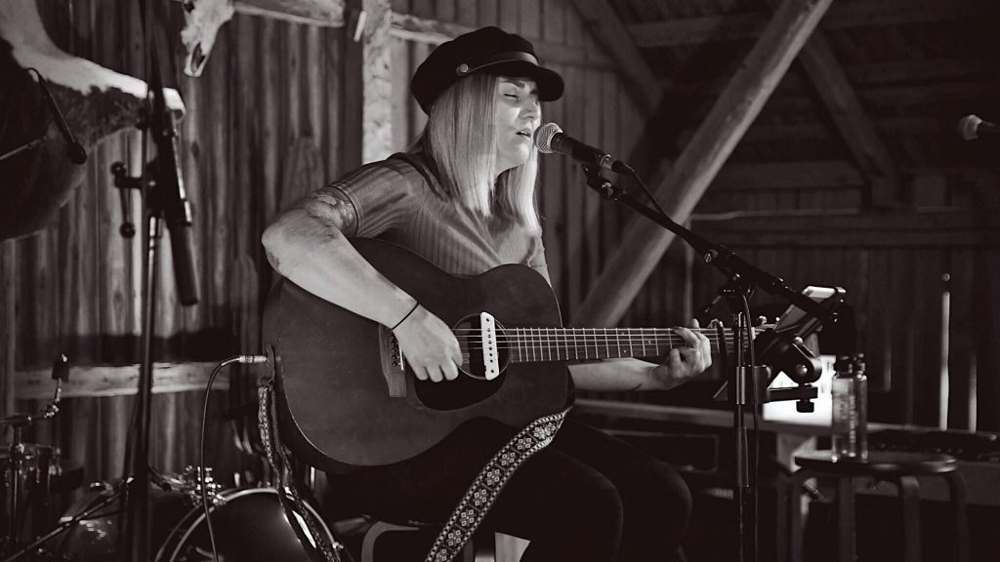
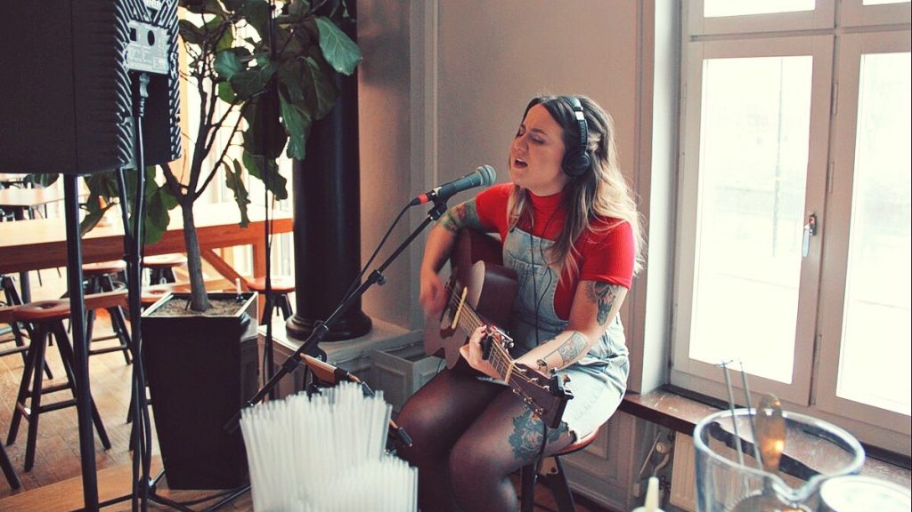

Ki az a hang, aki Lisa Peterson mögött rejtőzik? Ismerjétek meg a tehetséges Amanda Örtenhagot! Amanda svéd énekesnő és dalszerző, és saját zenekara is van, a Mendy.
K: Milyen zenét szeretsz? V: Mindenféle zenét szeretek, de leginkább az Americana és a pop áll a szívemhez legközelebb!
K: Mikor kezdtél el énekelni? V: Körülbelül 8-9 éves koromban kezdtem el énekelni, egy gospel kórusban! Fokozatosan kaptam szólókat, és imádtam, így azóta is énekelek.
K: Mit gondolsz Lisáról? V: Lisaként énekelni olyan szórakoztató és inspiráló! Lisa és én nagyon hasonlítunk egymásra – introvertált zenészek vagyunk, hűvös külsővel, de ugyanakkor meleg és érzelmes lélekkel.
K: Mi tetszik a legjobban abban, hogy zenész vagy? V: A legszórakoztatóbb abban, hogy zenész és énekes vagyok, az, hogy lehetőségem van rengeteg különböző emberrel dolgozni, és többnyire naponta különböző műfajokkal. És most, hogy a Star Stable közösség tagja lehetek, az egyszerűen fantasztikus!

K: Mi a kedvenc zenekarod/zenészed? V: Mindenféle zenei stílust és zenét szeretek, de mostanában sokat hallgatok Bonnie Raittet, a The Highwomen-t és a Bonny Light Horseman-t. Rengeteg különböző zene hat rám, de szerintem a First Aid Kit, Sarah Klang és Daniel Norgren azok a zenészek, akik a legnagyobb hatással voltak rám, és mindannyian svéd származásúak!
K: Lisa melyik dala a kedvenced? V: Eddig a kedvenc Lisa-dalom a Say Goodbye, azt hiszem. Annyira érzelmes és gyönyörű, Sara Menke producelte.
Amanda Lisa „Simple Things” című dalát énekli
Ne hagyjátok ki ezt a videót, amelyben Amanda Lisa „Simple Things” című dalát énekli! Egy élő közvetítésű koncertről származik, amelyet nemrég tartottunk Amandával. Nézzétek meg!